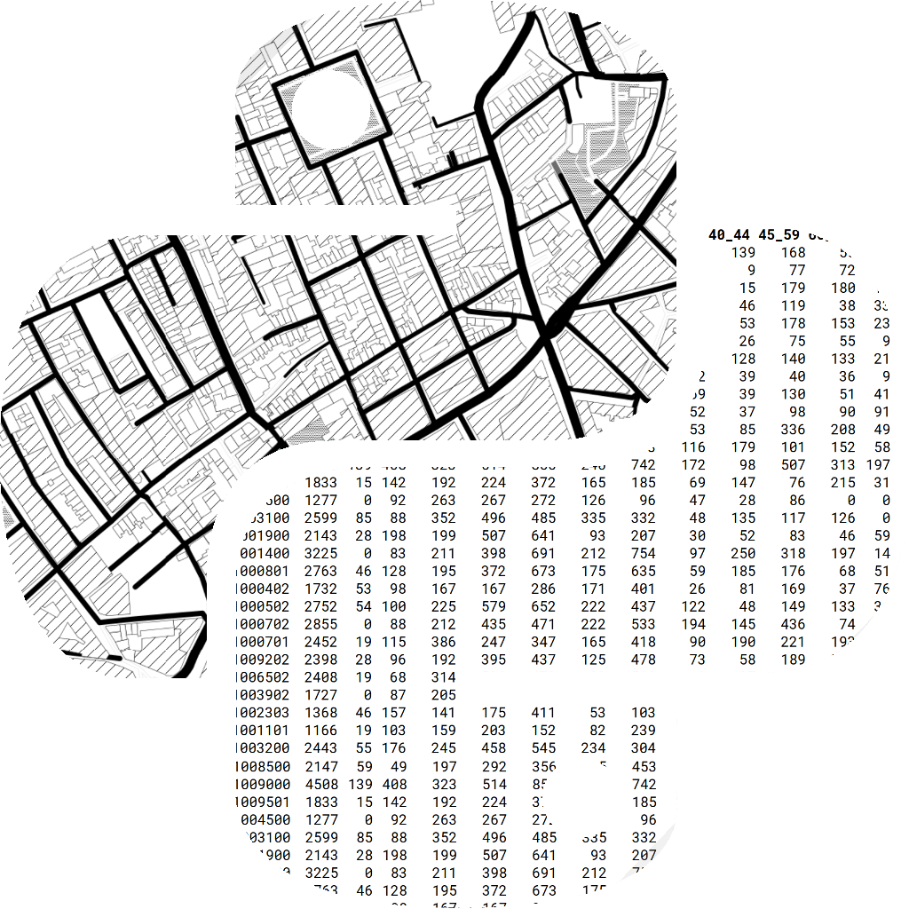
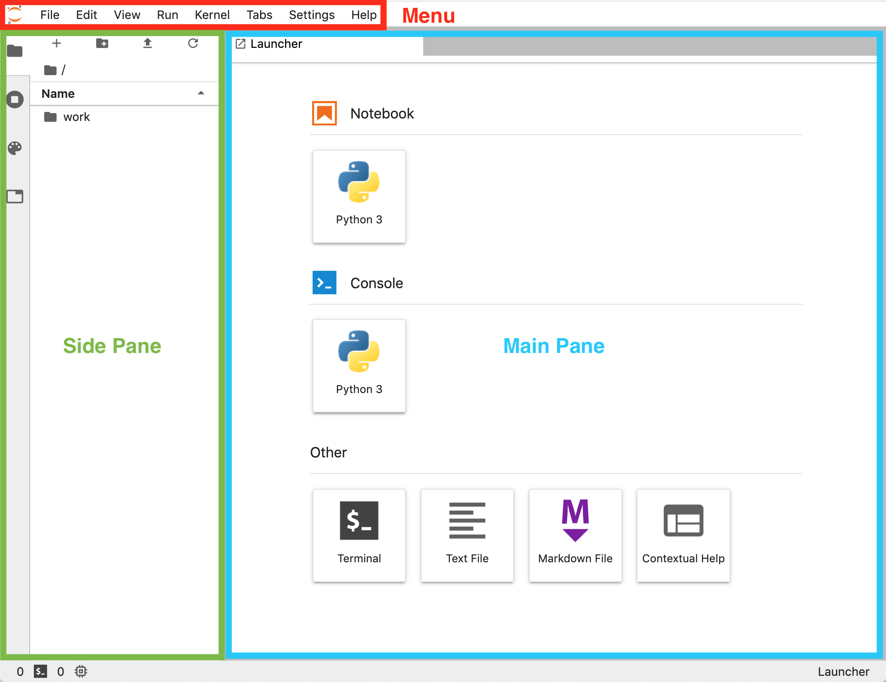
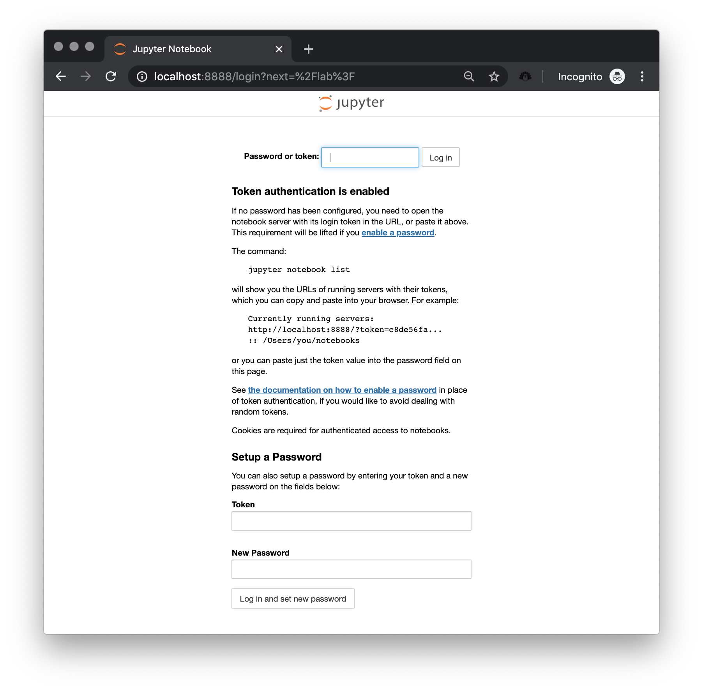

{kind=link}

4 Computational Tools for Geographic Data Science
This chapter provides an overview of the scientific and computational context in which the book is framed. Many of the ideas discussed here apply beyond geographic data science but, since they have been a fundamental pillar in shaping the character of the book, they need to be addressed. First, we will explore debates around “Open Science,” its origins, and how the computational community is responding to contemporary pressures to make science more open and accessible to all. In particular, we will discuss three innovations in open science: computational notebooks, open-source packages, and reproducible science platforms. Having covered the conceptual background, we will turn to a practical introduction of the key infrastructure this book relies on: Jupyter Notebooks and JupyterLab, Python packages, and a containerized platform to run the Python code in this book.
4.1 Open science
The term Open Science has grown in popularity in recent years. Although it is used in a variety of contexts with slightly different meanings (Crüwell et al. 2019), one statement of the intution behind Open Science is that the scientific process, at its core, is meant to be transparent and accessible to anyone. In this context, openness is not to be seen as an “add-on” that only makes cosmetic changes to the general scientific approach, but as a key component of what makes our scientific practices Science. Indeed the scientific process, understood as one where we “stand on the shoulders of giants” and progress through dialectics, can only work properly if the community can access and study both results and the process that created them. Thus, transparency, accessibility, and inclusiveness are critical for good science.
To better understand the argument behind contemporary Open Science, it is useful to understand its history. The idea of openness was a core committment of early scientists. In fact, that was one of the key differences with their contemporary “alchemists” who, in many respects, were working on similar topics albeit in a much more opaque way (Nielsen 2020). Scientists would record the field or lab experiments on paper notebooks or diaries, providing enough detail to, first, remember what they had done and how they had arrived at their results; but also to ensure other members of the scientific community could study, understand, and replicate their findings. One of the most famous of these annotations is Galileo’s drawings of Jupiter (source) and the Medicean stars, shown in Figure 1.
There is a growing perception that much of this original scientific ethos—operating transparently and arguing with accessible materials—has been lost. A series of recent high profile scandals have even prompted some to call a state of crisis (Ioannidis 2007). This “crisis” arises because the analyses that scientists conduct are difficult to repeat. Sometimes, it is even impossible to clearly understand the steps that were taken to arrive at results.
Why is there a sense that Science is no longer open and transparent in the way Galileo’s notebooks were? Although certainly not the only or even the most important factor, technology plays a role. The process and workflow of original scientists relied on a set of analog technologies for which a parallel set of tools was developed to keep track of procedures and document knowledge. Hence, the paper notebooks where biologists drew species, or chemists painstakingly detailed each step they took in the lab. In the case of social sciences, this was probably easier: quantitative data was scarce and much of the analysis relied either on math to minimize the amount of computation required (Efron and Hastie 2016) or small datasets which could be directly documented in the publication itself.
However, science has evolved a great deal since then, and much of the experimental workflow is dominated by a variety of machinery, most prominently by computers. Most of the science done today, at some point in the process, takes the form of operations mediated through software programs. In this context, the traditional approach of writing down every step in a paper notebook separates from the medium in which these steps actually take place.
The current state of science, in terms of transparency and openness, is prompting for action (Rey 2009). On the back of these debates, the term “reproducibility” is also gaining traction. Again, this is a rather general term but in one popular definition (Bollen et al. 2015), it suggests that scientific results need to be accompanied by enough information and detail so they could be repeated by a third party. Since much of modern science is mediated through computers, reproducibility thus poses important challenges for the computational tools and practices the scientific community builds and relies on. Although there are a variety of approaches, in this book we focus on what we see as an emerging consensus. This framework enables scientists to record and express entire workflows in a way that is both transparent and that fosters efficiency and collaboration.
We structure our approach to reproducibility in three main layers that build on each other. At the top of this “stack” are computational notebooks; supporting the code written in notebooks are open source packages; and making possible to transfer computations across different hardware devices and/or architectures are what we term reproducible platforms. Let us delve into each of them with a bit more detail before we show practically how this book is built on this infrastructure (and how you too can reproduce it yourself).
4.1.1 Computational notebooks
Computational notebooks are the twenty-first century sibling of Galileo’s notebooks. Like their predecessors, they allow researchers, (data) scientists, and computational practitioners to record their practices and steps taken as they are going about their work; unlike the pen and paper approach, computational notebooks are fully integrated in the technological paradigm in which research takes place today. For these reasons, they are rapidly becoming the modern-day version of the traditional academic paper, the main vehicle on which (computational) knowledge is created, shared, and consumed. Computational notebooks (or notebooks, from now on) are spreading their reach into industry practices, being used, for example, in reports. Although, they were designed within a broader scope of application, computational notebooks have several advantages for geographic data science work (Boeing and Arribas-Bel 2020).
All implementations of notebooks share a series of core features. First, a notebook comprises a single file that stores narrative text, computer code, and the output produced by code. Storing both narrative and computational work in a single file means that the entire workflow can be recorded and documented in the same place, without having to resort to ancillary devices (like a paper notebook). A second feature of notebooks is that they allow interactive work. Modern computational work benefits from the ability to try, fail, tinker, and iterate quickly until a working solution is found. Notebooks embody this quality and enable the user to work interactively. Whether the computation takes place on a laptop or on a data center, notebooks provide the same interface for interactive computing, lowering the cognitive load required to scale up procedures for larger data or more scientists. Third, notebooks have interoperability built in. The notebook format is designed for recording and sharing computational work, but not necessarily for other stages of the research cycle. To widen the range of possibilities and applications, notebooks are designed to be easily convertible into other formats. For example, while a specific application is required to open and edit most notebook file formats, no additional software is required to convert them into PDF files that can be read, printed, and annotated without the need of technical software.
Notebooks represent the top layer on the reproducibility stack. They can capture the detail of reproducible work specific to a given project: what data is used, how it is read, cleaned, and transformed; what algorithms are used, how they are combined; how each figure in the project is generated, etc. Stronger guidance on how to write notebooks in efficient ways is also emerging (e.g., (Rule et al. 2019)), so this too represents an evolving set of practices which we document incompletely in the following sections.
4.1.2 Open source packages
To make notebooks an efficient medium to communicate computational work, it is important that they are concise and streamlined. One way to achieve this goal is to only include the parts of the work that are unique to the application being recorded in the notebook, and to avoid duplication. From this it follows that a piece of code used several times across the notebook, or even across several notebooks, should probably be taken out of the notebook and into a centralized place where it can be accessed whenever needed. In other words, such functionality should be turned into a package.
Packages are modular, flexible, and reusable compilations of code. Unlike notebooks, they do not capture specific applications but abstractions of functionality that can be used in a variety of contexts. Their function is to avoid duplication “downstream” by encapsulating functionality in a way that can be accessed and used in a variety of contexts without having to re-write code every time it is needed. In doing so, packages (or libraries, an interchangeable term in this context) embody the famous hacker motto of DRY: “don’t repeat yourself”.
Open source packages is software that provides its own code for the user to inspect. In many cases, the user can then modify this code to make their own new software, or redistribute the package so that others may use it. These open source packages fulfill the same functions as any package in terms of modularizing code, but they also enable transparency: any user can access the exposed functionality and the underlying code that generates it. For this reason, for code packages to serve Open Science and reproducibility, they need to be open source.
4.1.3 Reproducible platforms
For computational work to be fully reproducible and open, it needs to be possible to replicate it in a different (computational) environment than where it was originally created. This means that it is not sufficient to use notebooks to specify the code that creates the final outputs, or even to rely on open source packages for shared functionality; the computational environment in which the notebook and packages get executed needs to be reproducible too. This statement, which might seem obvious and straightforward, is not always so due to the scale and complexity of modern computational workflows and infrastructures. It is no longer enough for an analysis to just work on the author’s laptop, it needs to be able to work on “any laptop” (or computer).
Reproducible platforms encompass the more general aspects that enable open source packages and notebooks to be reproducible. A reproducible platform thus specifies the infrastructure required to ensure a notebook that uses certain open source packages can be successfully executed. Infrastructure, in this context, relates to lower-level aspects of the software stack, such as the operating system, and even some hardware requirements, such as the use of specific chips such as graphics processing units (GPU). Additionally, a reproducible platform will also specify the versions of packages that are required to recreate the results presented in a notebook, since changes to packages can change the results of computations or break analytical workflows entirely.
Unlike open source packages, the notion of reproducible platforms is not as widespread and generally agreed upon. Its necessity has only become apparent more recently, and work on providing them in standardized ways is less developed than in the case of notebook technology or code packaging and distribution. Nevertheless, some inroads are being made. One area which has experienced significant progress in recent years and holds great promise in this context is container technology. Containers are a lightweight version of a virtual machine, which is a program that enables an entire operating system to run compartmentalized on top of another operating system. Containers allow to encapsulate an entire environment (or platform) in a format that is easy to transfer and reproduce in a variety of computational contexts. The most popular technology for containers nowadays is Docker, and the opportunities that it provides to build transparent and transferrable infrastructure for data science are starting to be explored (Cook 2017).
4.2 The (computational) building blocks of this book
The main format of this book is the “notebook” and is the first medium in which our content is created and is intended to be presented. Each chapter is written as a separate notebook and can be run interactively. At the same time, we collect all chapters and convert them into different formats for “static consumption” (i.e., read only), either in HTML format for the web, or PDF to be printed in a physical copy. This section will present the specific format of notebooks we use, and illustrate its building blocks in a way that allows you to then follow the rest of the book interactively.
4.2.1 Jupyter notebooks and JupyterLab
Our choice of notebook system is Jupyter (Kluyver et al. 2016). A Jupyter notebook is a plain text file with the .ipynb extension, which means that it is an easy file to move around, sync, and track over time. Internally, it is structured as a plain-text document containing JavaScript Object Notation that records the state of the notebook, so they also integrate well with a host of modern web technologies. Other notebook systems, such as Apache Foundation’s “Zeppelin”, the Alan Turing Institute’s “Wrattler”, or ObservableHQ, implement different systems and structures for creating a computational notebook, but all are generally web-based. They often separate the system that executes analytical code from the system that displays the notebook document. In addition, many notebook systems (including Jupyter), allow computational steps to be (re)run repeatedly out of the order in which they appear. This allows users to experiment with the code directly, but it can be confusing when code is executed out of order. Finally, because of their web-focused nature, many notebook systems allow for the direct integration of visualizations and tables within the document. Overall, notebooks provide a very good environment in which to experiment, present, and explain scientific results.
4.2.1.1 Notebooks and cells
The atomic element that makes up a notebook is called a cell. Cells are “chunks” of content that usually contain either text or code. In fact, a notebook overall can be thought of as a collection of code and text cells that, when executed in the correct order, describe and conduct an analysis.
Text cells contain text written in the Markdown text formatting language. Markdown is a popular set of rules to create rich content (e.g., headers, lists, links) from plain text. It is designed so that the plain text version looks similar to the outputted document. This makes it less complex than other typesetting approaches, but this means it also supports fewer features. After writing a text cell, the notebook engine will process the markdown into HTML, which you then see as rich text with images, styling, headers, and so forth. For more demanding or specific tasks, text cells can also integrate $$ notation. This means we can write most forms of narrative relying on Markdown, which is more straightforward, and use $$ for more sophisticated parts, such as equations. Covering all of the Markdown syntax and structure in detail is beyond the scope of this chapter, but the interested reader can inspect the official GitHub specification of the so-called GitHub-Flavored Markdown (Github, n.d.) that is adopted by Jupyter notebook.
Code cells are boxes that contain snippets of computer code. In this book, all code will be Python, but Jupyter notebooks are flexible enough to work with other languages.1 In Jupyter, code cells look like this:
# This is a code cellA code cell can be “run” to execute the code it contains. If the code produces an output (e.g., table or figure), this will be produced below the code cell as output. Every time a cell is run, its counter on the notebook interface will go up by one2. This counter indicates the order in which a cell is run, in that lower-number cells have been run before higher-number cells. As mentioned before, however, notebooks generally allow the user to “go back” and execute cells again, so there may be lower-number cells that come after higher-number cells.
4.2.1.2 Rich content
Code cells in a notebook also enable the embedding of rich (web) content. The IPython package provides methods to access as series of media and bring them directly to the notebook environment. Let us see how this can be done practically. To be able to demonstrate it, we will need to import the display module3:
import IPython.display as displayThis makes available additional functionality that allows us to embed rich content. For example, we can include a YouTube clip by passing the video ID4:
display.YouTubeVideo("iinQDhsdE9s")Or we can pass standard HTML code:
display.HTML(
"""<table>
<tr>
<th>Header 1</th>
<th>Header 2</th>
</tr>
<tr>
<td>row 1, cell 1</td>
<td>row 1, cell 2</td>
</tr>
<tr>
<td>row 2, cell 1</td>
<td>row 2, cell 2</td>
</tr>
</table>"""
)| Header 1 | Header 2 |
| row 1, cell 1 | row 1, cell 2 |
| row 2, cell 1 | row 2, cell 2 |
Note that this opens the door for including a large number of elements from the web, since an iframe of any other website can also be included. Of more relevance for this book, for example, this is one way we can embed interactive maps with an iframe:
osm = """
<iframe width="425"
height="350"
frameborder="0"
scrolling="no"
marginheight="0"
marginwidth="0"
src="http://www.openstreetmap.org/export/embed.html?bbox=-2.9662737250328064%2C53.400500637844594%2C-2.964626848697662%2C53.402550738394034&layer=mapnik"
style="border: 1px solid black">
</iframe>
<br/>
<small>
<a href="http://www.openstreetmap.org/#map=19/53.40153/-2.96545">View Larger Map</a>
</small>
"""
display.HTML(osm)Finally, using a similar approach, we can also load and display local images, which we will do throughout the book. For that, we use the Image method:
path = "../infrastructure/logo/logo_transparent-bg.png"
display.Image(path, width=250)
4.2.1.3 JupyterLab
Our recommended way to interact with Jupyter notebooks is through JupyterLab. JupyterLab is an interface to the Jupyter ecosystem that brings together several tools for data science into a consistent interface that enables the user to accomplish most of her workflows. It is built as a web app following a client-server architecture. This means the computation is decoupled from the interface. This decoupling allows each to be hosted in the most convenient and efficient solution. For example, you might be following this book interactively on your laptop. In this case, it is likely both the server that runs all the Python computations you specify in code cells (what we call the kernel) is running on your laptop, and you are interacting with it through your browser of preference. But the same technology could power a situation where your kernel is running in a cloud data center, and you interact with JupyterLab from a tablet.
JupyterLab’s interface has three main areas. These are shown in Figure 4. 5

At the top, we find a menu bar (red box in the figure) that allows us to open, create and interact with files, as well as to modify the appearance and behavior of JupyterLab. The largest real estate is occupied by the main pane (blue box). By default, there is an option to create a new notebook, open a console, a terminal session, a (Markdown) text file, and a window for contextual help. JupyterLab provides a flexible workspace in that the user can open as many windows as needed and rearrange them as desired by dragging and dropping. Finally, on the left of the main pane we find the side pane (green box), which has several tabs that toggle on and off different auxiliary information. By default, we find a file browser based on the folder from where the session has been launched. But we can also switch to a pane that lists all the currently open kernels and terminal sessions, a list of all the commands in the menu (the command palette), and a list of all the open windows inside the lab.
4.2.2 Python and open source packages
The main component of this book relies on the Python programming language. Python is a high-level programming language used widely in (data) science. From satellites controlled by NASA6 to courses in economics by Nobel Prize-winning professors7, Python is a fundamental component of “consensus” data science (Donoho 2017). This book uses Python because it is a good language for beginners and high-performance science alike. For this reason, it has emerged as one of the main options for Data Science (Economist, n.d.). Python is widely used for data processing and analysis both in academia and in industry. There is a vibrant and growing scientific community (through the Scientific Python library scipy and the PyData organization), working in both universities and companies, to support and enhance Python’s capabilities. New methods and usability improvements of existing packages (also known as libraries) are continuously being released. Within the geographic domain, Python is also very widely adopted: it is the language used for scripting in both the main proprietary enterprise geographic information system, ArcGIS, and the leading open geographic information system, QGIS. All of this means that, whether you are thinking of higher education or industry, Python will be an important asset, valuable to employers and scientists alike.
Python code is “dynamically interpreted”, which means it is run on-the-fly without needing to be compiled. This is in contrast to other kinds of programming languages, which require an additional non-interactive step where a program is converted into a binary file, which can then be run. With Python, one does not need to worry about this non-interactive compilation step. Instead, we can simply write code, run it, fix any issues directly, and rerun the code in a rapid iteration cycle. This makes Python a very productive tool for science, since you can prototype code quickly.
4.2.2.1 Open source packages
The standard Python language includes some data structures (such as lists and dictionaries) and allows many basic mathematical operations (e.g., sums, differences, products). For example, right out of the box, and without any further action needed, you can use Python as a calculator. For instance, three plus five is eight:
3 + 58Two divided by three is \(.6\bar{6}\):
2 / 30.6666666666666666And \((3 + 5) * \frac{2}{3}\) is \(5\frac{1}{3}\):
(3 + 5) * 2 / 35.333333333333333However, the strength of Python as a data analysis tool comes from additional packages, software that adds functionality to the language itself. In this book, we will introduce and use many of the core libraries of the Python ecosystem for (geographic) data science, a set of widely-used libraries that make Python fully featured. We will discuss each package as we use them throughout the chapters. Here, we will show how an installed package can be loaded into a session so that its functionality can be accessed. Package loading in Python is called importing. We will use the library geopandas as an example. The simplest way to import a library is by typing the following:
import geopandasWe now have access to the entire library of methods and classes within the session, which we can call by prepending “geopandas.” to the name of the function we want. Sometimes, however, we will want to shorten the name to save keystrokes. This approach, called aliasing, can be done as follows:
import geopandas as gpdNow, every time we want to access a function from geopandas, we need to type “gpd.” before the function’s name. However, sometimes we want to only import parts of a library. For example, we might only want to use one function. In this case, it might be cleaner and more efficient to bring the function itself only:
from geopandas import read_filewhich allows us to use read_file directly in the current session, without writing “gpd.read_file.”
Our approach in this book is to not alias to make our code more readable (geopandas instead of gpd). Also, we will introduce each new library within the text of the chapter where it is first required, so that our code is threaded pedagogically with narrative. Once a package has been introduced, if subsequent chapters rely on it, we will import it at the beginning of the chapter with all the other, already introduced libraries.
4.2.2.2 Contextual help
A very handy feature of Python is the ability to access on-the-spot help for functions. This means that you can check what a function is supposed to do, or how to use it from directly inside your Python session. Of course, this also works handsomely inside a notebook, too. There are a couple of ways to access the help. Take the read_file function we have imported above. One way to check its help dialog from within the notebook is to add a question mark after it:
?read_fileIn the notebook, this brings up a sub-window in the browser with all the information you need.8 Additionally, JupyterLab offers the “Contextual Help” box in the initial launcher. If you open it, the help of every function where your cursor lands will be dynamically displayed in the contextual help.
If, for whatever reason, you needed to print that information into the notebook itself, you can use the following help function instead:
help(geopandas.read_file)4.2.3 Containerized platform
As mentioned earlier in this chapter, reproducible platforms encompass technology and practices that help reproduce a set of analyses or computational work in a different environment than that in which it was produced. There are several approaches to implement this concept in a practical setting. For this book, we use a piece of software called Docker. Docker is based on the idea of a “container,” which allows users to create computational environments and run processes within them in a way that is isolated from the host operating system. We decided to use Docker for three main reasons: first, it is widely adopted as an industry standard (e.g., many websites run on Docker containers), which means it is well supported and is likely to be maintained for a while; second, it has also become a standard in the world of data science, which means foundational projects such as Jupyter create official containers for these packages; and third, because of the two previous reasons, developing the book on top of Docker allows us to easily integrate it with cloud services or local (clusters of) servers, widening the set of delivery channels through which we can make the book available to broader audiences.
With Docker, we can create a “container” that includes all the tools required to access the content of the book interactively. But, what exactly is a container? There are several ways to describe it, from very technical to more intuitive ones. In this context, we will focus on a general understanding rather than on the technical details behind its implementation.
At a high level, we can think of a container as a “box” that includes everything that is required to run a certain piece of software. This box can be moved around, from machine to machine, and the computations it executes will remain exactly the same. In fact, the content inside the box remains exactly the same, bit by bit. When we download a container into a computer, be it a laptop or a data center, we are not performing an install of the software it contains from the usual channels, for the platform on which we are going to run it. Instead, we are downloading the software in the form that was installed when the container was originally built and packaged, and for the operating system that was also packaged originally. This is the real advantage: build once, run everywhere. For the experienced reader, this might sound very much like their older sibling: virtual machines. Although there are similarities between both technologies, containers are more lightweight, meaning that they can be run much more swiftly and with less computational power and memory than virtual machines. The isolated content inside a container interacts with the rest of the computer through several links that connect the two. For this book, since JupyterLab is a client-server application, the server runs inside the container and we access it through two main “doors”: one, through the browser, we will access the main Lab interface; and two, we will “mount” a folder inside the container so we can use software inside the container to edit files that are stored outside in the host machine.
“Containers sound great but, how can I install and run one?”, you might be asking yourself at this point. First, you will need to install Docker on your computer. This assumes you have administrative rights (i.e., you can install software). If that is the case, you can go to the Docker website9 and install the version that suits your operating system. Note that, although container technology is Linux-based, Docker provides tools to run it smoothly in macOS and Windows. An install guide for Docker is beyond the scope of this chapter, but there is much documentation available on the web to this end. We personally recommend the official documentation,10 but you might find other resources that suit your needs better.
4.2.4 Running the book in a container
Once you have Docker up and running on your computer, you can download the container we rely on for the book. We have written the book using the gds_env project11, and that is what we recommend. The gds_env provides a containerised platform for geographic data science. It relies on the official Jupyter Docker release and builds on top of it a large set of libraries and add-on’s that make the life of the geographic data scientist easier. A new version of the container including the most recent versions of libraries is released twice a year. We have released the book using version 7.0 (we wrote much of it with 6.1 and also worked), but it is likely later versions will work as well.
Downloading the container is akin to installing the software you need to interact with the book, so you will only need to run it once. However, keep in mind that the Docker “image,” the file that stores the container, is relatively large (around 4GB), so you will need the space on your machine as well as a good internet connection. If you check those two boxes, you are ready to go. Here are the steps to take:
Open a terminal or shell. How to do this will depend on your operating system:
Windows: we recommend PowerShell or the Terminal app. Type “PowerShell” or “Terminal” on the startup menu and, when it comes up, hit enter. This will open a terminal for you.macOS: use theTerminal.app. You can find it on the Applications folder, within the Utilities subfolder.Linux: if you are running Linux, you probably already have a terminal application of preference. Almost any Linux distribution comes with a terminal app built in.
Download, or “pull”, the GDS container. For this run on the terminal the following command:
docker pull darribas/gds_py:7.0
That’s it! Once the command above completes, you have all the software you need to interact with this book.
You can now run the container with the following command:
docker run \
--rm \
-ti \
-p 8888:8888 \
-v ${PWD}:/home/jovyan/work \
darribas/gds_py:7.0Let’s unpack the command so that we understand everything that is going on here to get further insight into how the container works:
docker run: Docker does a lot of things; to communicate that we want to run a new container, we need specify it.--rm: this flag will ensure the container is removed when you close it. This in turn makes sure every time you run it again, you start afresh with the exact same set up.-ti: this flag further ensures that the container is not run in the background but in an interactive mode.-p 8888:8888: with this, we ensure we forward the port from inside the container out to the host machine (e.g., your laptop). This flag is important because it allows the Jupyter server running inside the container to communicate with the browser so we can render the app and send commands. It is one of the two doors we discuss above connecting the container with the computer it runs on.-v ${PWD}:/home/jovyan/work: this is the second door. This flag “mounts” the folder from where the command is being run in the terminal (${PWD}is theWorkingDirectory) into the container so it is visible and editable from inside the container. Such folder will be available at the container’sworkfolder.darribas/gds_py:7.0: this specifies which container we want to run. In this example, we run the7.0version of thegds_pycontainer. Depending on when you read this, there might be a more recent version that you can try.
The command above will generate output that will look, more or less, like the following:
Executing the command: jupyter notebook
[I 14:45:34.681 NotebookApp] Writing notebook server cookie secret to /home/jovyan/.local/share/jupyter/runtime/notebook_cookie_secret
[I 14:45:36.504 NotebookApp] Loading IPython parallel extension
[I 14:45:36.730 NotebookApp] JupyterLab extension loaded from /opt/conda/lib/python3.7/site-packages/jupyterlab
[I 14:45:36.731 NotebookApp] JupyterLab application directory is /opt/conda/share/jupyter/lab
[I 14:45:36.738 NotebookApp] [Jupytext Server Extension] NotebookApp.contents_manager_class is (a subclass of) jupytext.TextFileContentsManager already - OK
[I 14:45:37.718 NotebookApp] Serving notebooks from local directory: /home/jovyan
[I 14:45:37.718 NotebookApp] The Jupyter Notebook is running at:
[I 14:45:37.719 NotebookApp] http://0fb71d146102:8888/?token=ae7e8017f3e97658a218ec2c2d1fbcc894f09d80f6b5f79c
[I 14:45:37.719 NotebookApp] or http://127.0.0.1:8888/?token=ae7e8017f3e97658a218ec2c2d1fbcc894f09d80f6b5f79c
[I 14:45:37.719 NotebookApp] Use Control-C to stop this server and shut down all kernels (twice to skip confirmation).
[C 14:45:37.725 NotebookApp]
To access the notebook, open this file in a browser:
file:///home/jovyan/.local/share/jupyter/runtime/nbserver-6-open.html
Or copy and paste one of these URLs:
http://0fb71d146102:8888/?token=ae7e8017f3e97658a218ec2c2d1fbcc894f09d80f6b5f79c
or http://127.0.0.1:8888/?token=ae7e8017f3e97658a218ec2c2d1fbcc894f09d80f6b5f79cWith this, you can then open your browser of preference (ideally Mozilla Firefox or Google Chrome) and enter http://localhost:8888 as if it were a website. This should then load a landing page that looks approximately like this one:

To access the lab, copy the token from the terminal (in the example above, that would be ae7e8017f3e97658a218ec2c2d1fbcc894f09d80f6b5f79c), enter it on the box and click on “Log in”. Now you are in, and you can view and execute the chapters in this book.
4.3 Conclusion
Reproducibility requires us to take our tools seriously. Since the onset of computational science, we have sought methods to keep the “code” that implements science linked tightly to the writing that explains it. Notebooks offer us a way to do this. Further, keeping in the spirit of open science from long ago, we will do better science if we keep our software public and open to the world. To guarantee that our code can, in fact, be executed, we must also document the environment in which the code is executed using tools like Docker. In the following chapter, we use these tools in concert with geographical thinking to learn about geographic data science.
4.4 Next steps
For those interested in further reading on the topic, we suggest the following articles.
For more information on how to write “good” computational notebooks, consider:
Rule, Adam, Amanda Birmingham, Cristal Zuniga, Ilka Altintas, Shih-Cheng Huang, Rob Knight, Niema Moshiri, Mai H. Nguyen, Sara Brin Rosenthal, Fernando Pérez et al. 2019. “Ten Simple Rules for writing and sharing computational analyses in Jupyter Notebooks.” PLOS Computational Biology 15(7).
For additional perspective on how open code and reproducibility matters in geographic applications, consult the following publications:
Rey, Sergio. 2009. “Show me the code: spatial analysis and open source.” Journal of Geographical Systems 11(2): 191-207.
Brunsdon, Chris. 2015. “Quantitative Methods I: Reproducible Research and Quantitative Geography.” Progress in Human Geography 40(5): 687-696.
A full list of supported kernels for Jupyter is available at
https://github.com/jupyter/jupyter/wiki/Jupyter-kernels↩︎This counter may not always be visible in all of the formats a notebook may be viewed. In this book, cell numbers will not be visible on paper, but they will be visible in the online versions of the notebook.↩︎
Skip to the next section if you want to learn more about importing packages.↩︎
We regret to inform the reader that the printed page is not the best for displaying YouTube videos, or indeed any web content. So if you are reading this book on paper, the video will not render. We recommend viewing the notebooks online at
geographicdata.science/bookto see the full power of the notebook.↩︎Depending on the version of JupyterLab you are using, the layout and appearance may slightly change.↩︎
For more details, see
https://www.python.org/about/success/usa/↩︎For more details, see
https://lectures.quantecon.org↩︎In the book, this will instead show the full help text provided by the function.↩︎